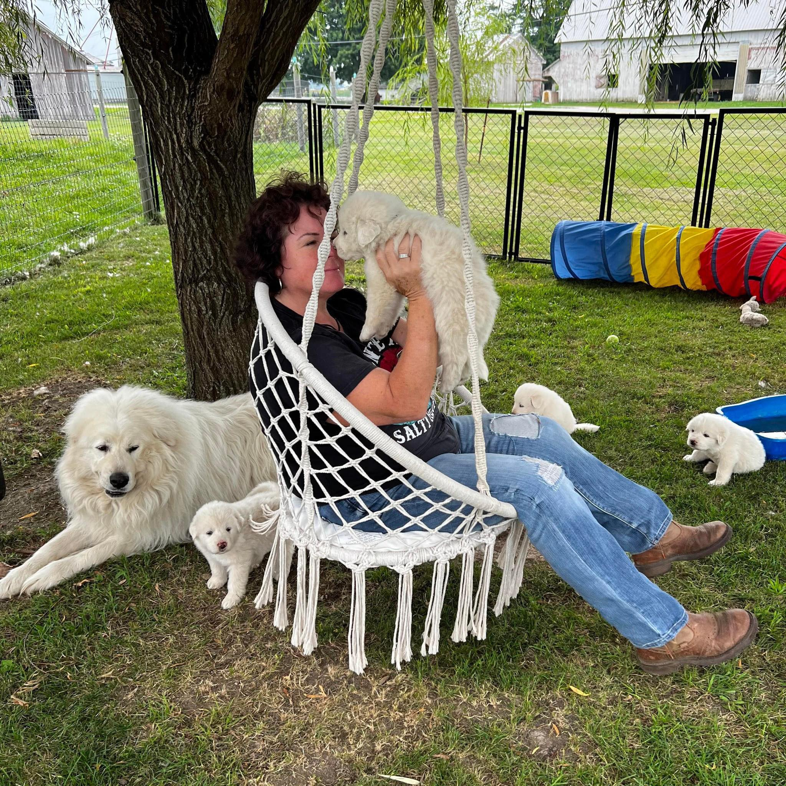
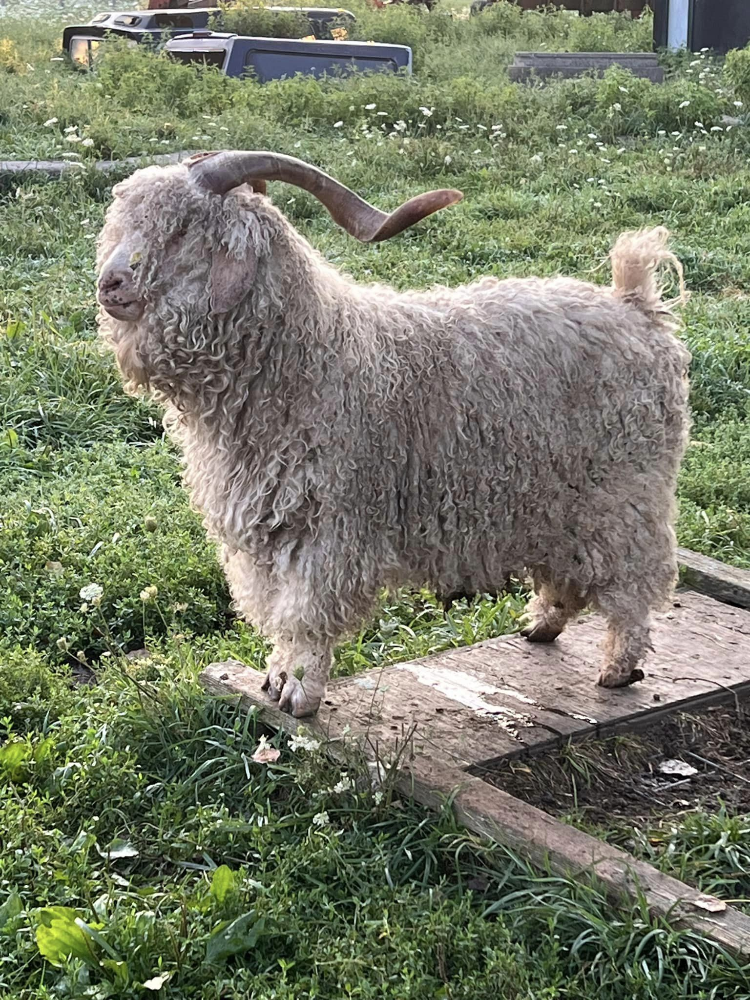
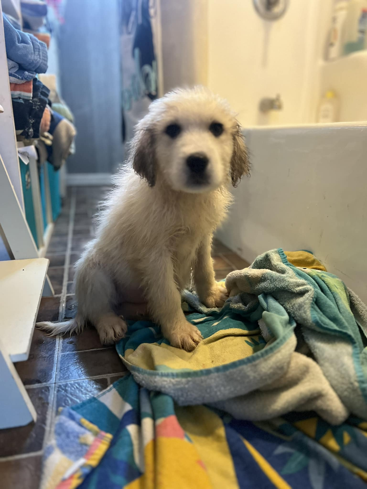

Blackhorn Fiber Farm is family owned and operated by Jessica Hofacker (Fremont, OH). Our herd includes five adult Great Pyrenees, four Great Pyrenees puppies, and twenty-eight Angora goats. Blackhorn Fiber farm processes 336 lbs of mohair annually*.
  